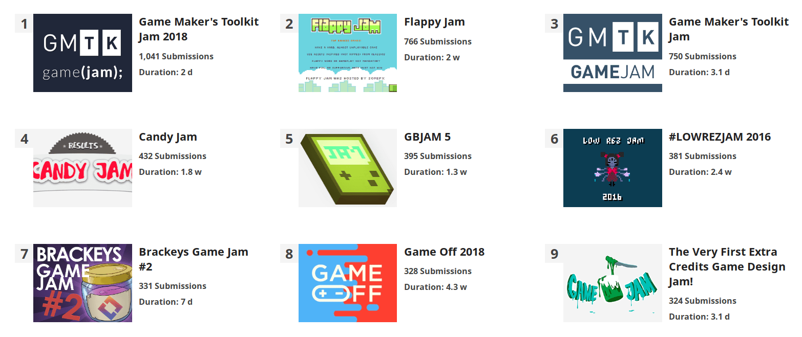
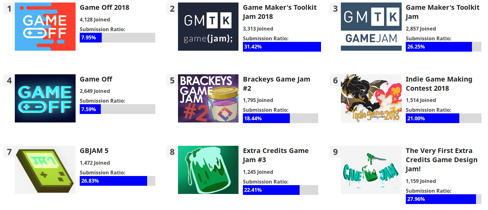
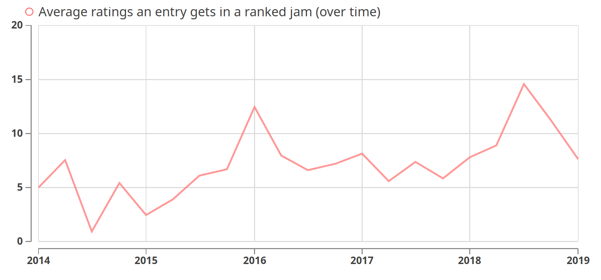
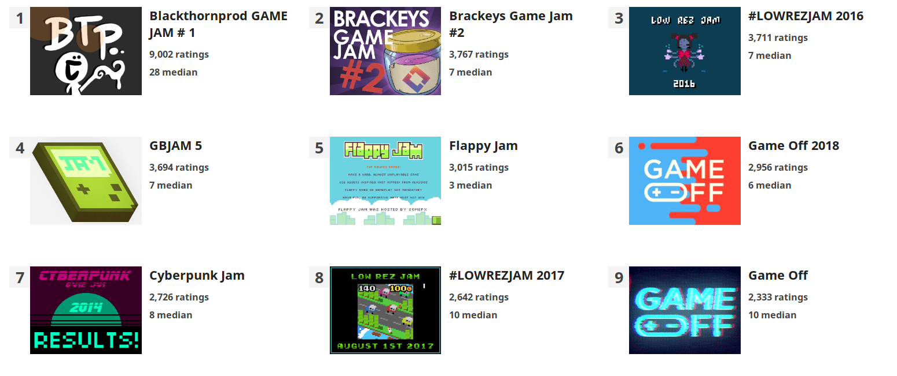
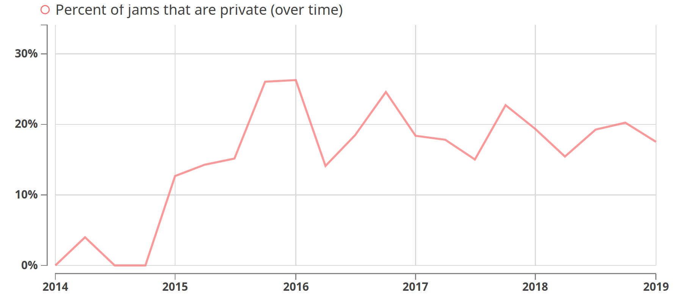
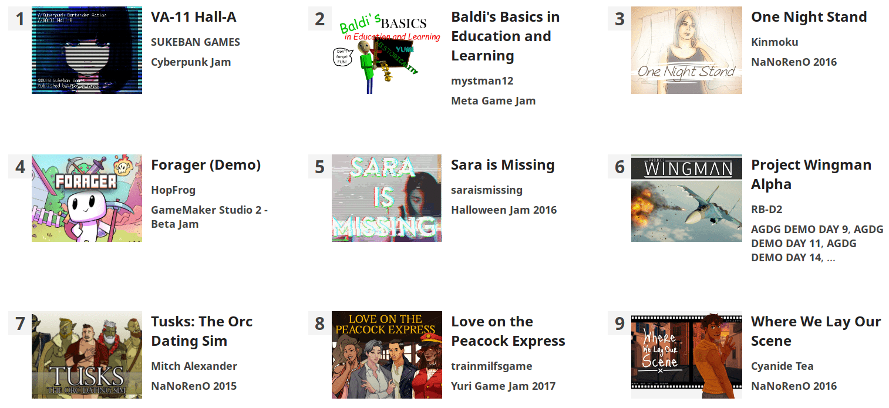

class: middle, center # Game Jams & itch.io [https://itch.io](https://itch.io) · [@itchio](https://twitter.com/itchio) March 16, 2019 --- # Hi <img style="float: left; margin-right: 1em;" src="leafo.png" alt="" width="15%" /> My name is Leaf Corcoran. <div style="clear:both"></div> * https://leafo.itch.io * https://github.com/leafo * https://twitter.com/moonscript * https://leafo.net ??? Here are some places where you might see me on the internet --- class: center, middle ## I'm the founder of itch.io ??? ..go to next slide before talking --- class: center, middle --- class: middle, center # Some questions for you --- class: middle # Some questions for you * Raise hand if you've used itch.io --- class: middle # Some questions for you * Show me some hands if you've submitted to a jam on itch.io --- class: middle # Some questions for you * And who has hosted jams on itch.io? --- class: middle # Some questions for you * Lastly, are you likely or interested in hostng a jam on itch.io in the future? --- class: middle, center # How did I get here? --- class: middle <div style="display: flex; align-items: center; justify-content: center;"> <img src="ld1.gif" style="display: block; width: 38%" alt="" /> <div> <img src="ld2.gif" style="display: inline-block; width: 50%; " alt="" /> <img src="ld3.gif" style="display: inline-block; width: 45%; " alt="" /> </div> </div> --- class: center, middle # The idea for itch.io started out as a place to host jam games --- class: middle # A place to create... * a page that's just your game * no distractions, like content from the platform that hosts it * a page that's customizable, make it feel like your own * a page with quick no-fuss downloads --- class: middle # A place to create... * a page that's just your game * no distractions, like content from the platform that hosts it * a page that's customizable, make it feel like your own * a page with quick no-fuss downloads * **a page to sell your game directly with fair terms** --- class: center # itch.io was born **March 03, 2013** (happy bday) <http://leafo.net/posts/introducing_itchio.html> --- class: center, middle # It was uneventful (It didn't launch with any sort of game jam functionality, just game hosting) ??? * Stuck with it * There we're so few games at launch I didn't even have a way to browse them all * Did ludum dare a bunch * Used that as opportunity to share the site --- class: center, middle ## Then I saw some internet friends hosting a jam... ??? * A jam being organized on a self hosted php forum, as things were done in 2013 * I saw an opportunity * Put together something hacky * The first jam on itch.io! * Wasn't able to find screenshot * 11 submissions --- class: middle, center, bgimage background-image: url(candyjam.png) ??? * I spread word, and there were other people interested * The next jam * 432 submissions! --- class: middle, center, bgimage background-image: url(flappy.png) ??? * 700 submissions! * Almost doubled the number of games on itch.io * I knew I was on to to something * I like how these two jams had a theme: game developers making a statement about something going on * itch.io did the same by responding to steam greenlight --- class: middle, center, bgimage background-image: url(cyberpunk.png) ??? * The system was sill closed, invite only * Frantically adding features as jam hosts reached out to me --- class: middle, center ??? * Existing, well known jams were interested --- class: middle, center # Then, jams for all <https://itch.io/docs/creators/game-jams> ??? * Finally, sometime in early 2014 jams were open for all * I don't know exact date: I deploy before announcing to test for bugs --- class: middle, center # Hosting a jam What our jam tools provide as of today ??? * our tools have evolved a bit * this section is to get you excited about hosting a jam * even if nobody joins... --- class: middle, center, bgimage background-image: url(edit-jam.png) --- class: middle # Voting options * **Unranked** * **Ranked** --- class: middle # Voting options * **Unranked** * **Ranked** * Criteria * Voting types * Who can vote: participants, judges, everyone, etc. --- class: middle, center ??? Ranked jams have to set criteria * different voting modes * manual ranking flexibility is important --- class: middle, center ??? Fields let hosts collect info about submissions * public domain jam, Creative commons license * github game off collects a github url --- class: middle, center, bgimagecontain background-image: url(results.png) ??? Results broken down by criteria, with primary for overall --- class: middle, center, bgimagecontain background-image: url(participants.png) ??? Managing who has joined --- class: middle, center, bgimagecontain background-image: url(entries.png) ??? * Managing submissions * Boot bad people out * Create late submit links (very useful) --- class: middle, center <https://itch.io/jams> <img src="jamcalendar.png" style="max-width: 100%;" alt="" /> ??? ever hear of the phrase 'game jam fatigue'? --- # Game jams are great I enjoyed adding tons of features to make stuff happen * Custom fields, like the CC0 field for public domain jam * Email lists to recurring jams could reach out to old participants * Message boards for jams to run communities * Moderators and judges to allow teams to run a jam * Anonymized judge feedback & manual ranking for when prizes are rewarded * Extracting strings for localization * Exporting submissions and participants * Much more... --- class: middle, center # Game Jams in charts & numbers --- class: middle, center ??? Over 200 published jams per month --- class: middle, center ### Over 5,000 jams have been hosted on itch.io --- class: middle, center ??? Submissions per month growing as well --- class: middle, center ??? * Almost 50 thousand jam submissions * itch.io has 155,904 public, published games (~180k projects) --- class: middle, center ### Top jams by number of submissions  --- class: middle, center <img src="submissions_external_internal.png" alt="" style="max-width: 100%" /> <div class="legend"> <div class="swatch" style="background-color: #7ED6D7;"></div> Hosted on itch.io <div class="swatch" style="background-color: #FB9175"></div> Hosted on elsewhere (Ludum Dare, GGJ) </div> ??? * We also end up hosting games for many jams not on itch.io as well * About 18k in total with global game jam and ludum dare tags * The jams we host are bringing in more games --- class: middle, center ## Custom support for Ludum Dare ??? * It's not a competition * I build features for external jams * don't have this for global game jam yet --- class: middle, center # Jams are easier than ever to host and participate in ??? * enough fluff numbers * what's the effect of making jams so easy to create? * many people have often joked that there are too many jams going on * there can never be too many jams, but we should be creating an ecosystem that encourages people to make successful jams --- class: middle, center <img src="empty_counts.png" alt="" style="max-width: 100%" /> <em style="font-size: 16px; float: right;">Only includes jams that have ended</em> <div class="legend"> <div class="swatch" style="background-color: #7ED6D7;"></div> No one has joined <div class="swatch" style="background-color: #FB9175"></div> At least one person joined, but no submissions </div> ??? Empty jams? How many jams get no participants, or games? --- class: middle, center ### Being aware of empty jams can help us build better tools ??? * Ratio of empty jams * Must be aware of this, help push it down * encourage meaningful jams & community --- class: middle, center # What about jams with participants? --- class: middle, center <img src="joins_per_month.png" alt="" style="max-width: 100%" /> --- class: middle, center ### People have joined jams on itch.io over 160k times <img src="total_joins.png" alt="" style="max-width: 100%" /> --- class: middle # Joining wasn't always there * Originally, you 'joined' when you submitted your entry * We added joining to allow hosts to keep in touch with people who are interested * Hopefully encouraging more people to submit ??? How many people who join actually submit? --- class: middle, center <img src="submit_rate_over_time.png" alt="" style="max-width: 100%" /> --- class: middle, center ### Top jams by number joined  --- class: middle, center # What about jam durations? --- class: middle, center <img src="jam_duration_distribution.png" alt="" style="max-width: 100%" /> --- class: middle, center --- class: middle, center # A few more graphs --- class: middle, center ??? Ranked vs unranked * What about prizes? --- class: middle, center  ??? Average number of ratings per submission in jams that have rating available --- class: middle, center <img src="total_ratings.png" alt="" style="max-width: 100%" /> ??? Total ratings * is cumulative, over 200k * we introduced "public rating" * easily abused --- class: middle, center ### Top jams by number of ratings  ??? Only includes jams that have contributors or participants rating --- class: middle, center  ??? Running private jams --- class: middle, center # What about submissions? --- class: middle, center ### Top jam submissions by views <img src="top_games_views.png" alt="" style="max-width: 90%" /> --- class: middle, center ### Top jam submissions by earnings  ??? Jam games are making money --- class: middle, center # Over $200,000 has been earned by jam submissions The majority through 'Pay What You Want' donations ??? * Many others convert to some commercial product and find a way to make money that way --- # Tools used by submissions Self-tagged by participants tool | percent_usage ------------------------------------+--------------- Unity | 29.09% GameMaker: Studio | 9.17% Construct | 7.93% Twine | 4.62% Bitsy | 4.35% Godot | 4.18% RPG Maker | 3.71% Adobe Photoshop | 2.86% Unreal Engine | 2.76% PICO-8 | 2.60% Phaser | 2.51% LÖVE | 2.45% Blender | 2.30% Ren'Py | 2.27% Aseprite | 1.92% Audacity | 1.91% GIMP | 1.81% Oculus Rift | 1.01% Bfxr | .81% libGDX | .80% Krita | .60% Paint.net | .59% Inkscape | .54% Bosca Ceoil | .53% Adobe Illustrator | .44% PuzzleScript | .42% Maya | .40% FL Studio | .40% Pyxel Edit | .38% 3ds Max | .37% Piskel | .37% Clickteam Fusion | .35% LMMS | .32% TIC-80 | .31% Tiled | .31% --- class: middle, center # Some jams --- class: middle, center, bgimage background-image: url(gameoff.png) --- class: middle, center, bgimage background-image: url(bitsy.png) ??? 23 bitsy jams so far --- class: middle, center, bgimage background-image: url(7drl.png) ??? established jam that migrated to using itch.io * helped get submissions in a submittable form --- class: middle, center, bgimage background-image: url(gmtk.png) ??? * popular youtube channel * aka britishgaming * 48 hour jam, focused on design, mechanics, and clever ideas --- class: middle, center, bgimage background-image: url(emotionalmech.png) ??? tabletop games --- class: middle, center, bgimage background-image: url(myfirst.png) ??? Series of jams > First Game Jam is an online game jam for people of all skill levels to learn something new Emphasis on community and learning --- class: middle, center, bgimage background-image: url(weekly_jam.png) --- class: middle, center, bgimage background-image: url(manifestojam.png) ??? quote: THIS JAM IS FOR COLLECTIVELY UNCORKING OUR UTOPIAN ENERGY IN 2018 perfect example of game jams being used by developerse for unqiue forms of expression --- class: middle, center, bgimage background-image: url(screensaver.png) --- class: middle, center, bgimage background-image: url(dontmakeagame.png) ??? on track to be one of our biggest --- class: middle, center # There's a lot more <https://itch.io/jams> And sign up for the jams mailing list, every 2 weeks we send a digest of interesting jams --- class: middle, center, bgimagecontain background-image: url(digest.png) ??? This is out weekly digest --- class: middle, center # The future of jams on itch.io --- class: middle, center # It's very important to us And there's a lot of opportunity for improvement ??? * working with hosts gives me tons of ideas * How do we go about that? --- class: middle, center # What is a game jam? --- ## What is a game jam? Working on tools for game jams has me questioning what actually is a game jam? --- ## What is a game jam? Working on tools for game jams has me questioning what actually is a game jam? * An event where people create things? Start date & end date necessary? --- ## What is a game jam? Working on tools for game jams has me questioning what actually is a game jam? * An event where people create things? Start date & end date necessary? * Maybe just a collection of things that exist for a purpose --- ## What is a game jam? Working on tools for game jams has me questioning what actually is a game jam? * An event where people create things? Start date, & end date necessary? * Maybe just a collection of things that exist for a purpose * Is taking a game development class and completeing a final project a game jam? --- class: middle, center # itch.io, although a useful tool, has codified how game jams are run for many people --- class: middle, center # I don't want us to get stuck in a certain way of thinking about how game jams can be organized --- class: middle, center ## Developers participating in jams are looking for ways to break out of the norm --- class: middle, center ## It's our (itch.io's) duty to also break the mold when hosting game jams --- class: middle, center ## I hope itch.io can provide a platform where people can really exercise their creativity for the kinds of events they want to host --- class: middle, center # Some features ??? That was really vague so here are some real upcoming features --- # Upcoming features * "Quality of life" type things * Better controls about who can join: approve people before they can join * Restricting who can enter/submit based on the kinds of files they have * Checking dates of files (people love to abuse jams!) * Hosting recurring events * Flexible dates: no end, late submit buffer * Invite only: control who can see and join a jam * Devlogs for jams: post about your work in progress before it has become a game --- # Upcoming features * Have fine control over when the results are announced, give judges the time they need * Try to fix public voting (to some extent) * Individual voting options per criteria * Rich custom fields * A nice way to disqualify an entry: * Give the host ability to report why entry is disqualified * Still leave the jam page up though, but unranked * & more (tell me your ideas afterwards) --- class: middle, center # Thank you [https://itch.io](https://itch.io) · [@itchio](https://twitter.com/itchio) ### Questions? Ask me on Twitter, itch.io forums, our Discord, or here! Me: [@moonscript](https://twitter.com/moonscript)